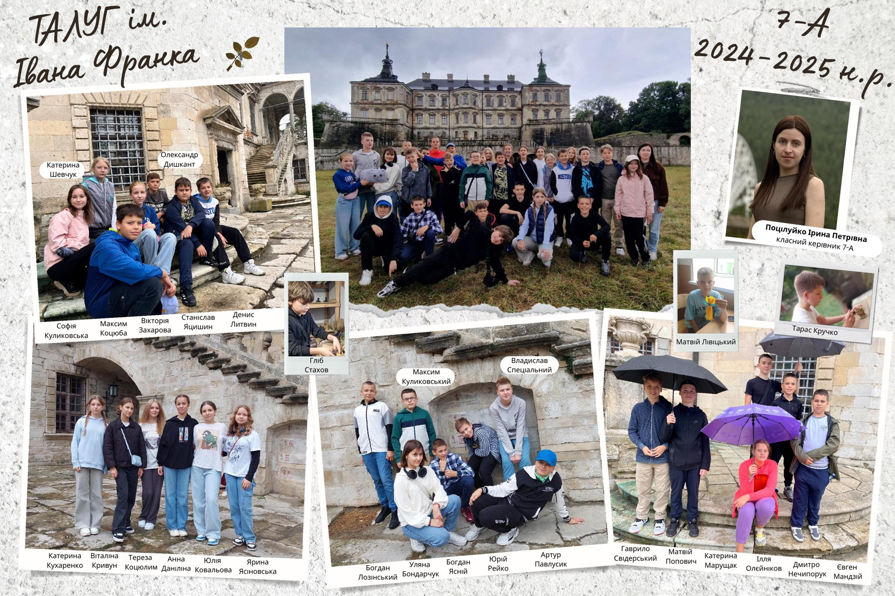

Наш клас
8-А, 2025–2026 н.р.
Вітаємо!
Це сайт нашого 8-А класу. Тут ви знайдете наші фото, посилання на сайти інших команд та форму, через яку можна нам написати.

Колаж з минулого року — коли ми ще були 7-А.
Про клас
Класний керівник — Поцілуйко Ірина Петрівна. На колажі вище — наші фото з минулорічної поїздки в Підгорецький замок.
Що тут є
- Галерея — фото з нашої поїздки
- Посилання — сайти інших команд нашого класу
- Контакти — форма, щоб нам написати